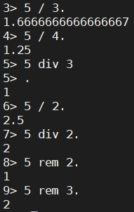

erlang学习-2-数据类型
erlang有如下内置数据类型
1、数值类型

div取商，rem取余(取模)，\不同与其他语言的除号，\的结果是真正的商，带小数点的那种

无需额外计算，erlang可以直接进行其他进制与十进制之间转换转换格式为进制#该进制的数值，例如2#10010，表示2进制的10010。
2、变量
erlang与其他编程语言有很大的不同，在erlang中变量一经赋值，该变量的值将无法改变。还有erlang中变量的首字母必须是大写。

erlang的变量赋值很灵活，
3、原子
erlang的原子可以理解为C、Java中的常量

atom就是“atom”，不能操作它，我们不能给他复制，不能操作它。
4、布尔代数和比较操作符
逻辑运算
erlang也有或且非这几种逻辑运算，or、and、not、xor

比较运算
有大于、小于、等于、大于等于、小于等于 ，不等于这几种比较运算符，>、<、=:=、>=、=<、=\=

在erlang中相等是=:=，虽然用==运算符也可以，但是==和=:=还是有差异的
5、元组
erlang中用{element1,element2…,elementsN}的形式表示元组，元组可以理解为C,Java中的数组

模式匹配

在erlang中=并并不只是赋值操作符，对于相同类型的数据，例如元组，如上图所示，我们把一个元组“赋值”给另一个元组，然后元组对应的元组就相等，我们称这种操作性质为模式匹配。
6、列表
列表的基本形式是[element1,element2….elementN]，用中括号表示，erlang中的列表可以理解为java中的List,性质也基本类似。

列表里可以存放其他数据类型，包括列表
列表的操作
列表的操作符有++：列表拼接、--：列表删除元素。

--操作符的运算规则是右结合，是从右往左运算

hd()和tl()方法返回列表头和列表尾，lenght()返回列表的长度，我们使用|操作符来分离列表，列表的另外一种表现形式可以是[Head|Tail]

|操作符为称之为cons操作符，仅凭cons操作符和值可以构建出任何列表
任何列表都可以用这个公式构建[Term1|[Term2|[…|[TremN]]]
7、列表推导式

列表推导式的表示类似于数学集合的表示方法： ，
，